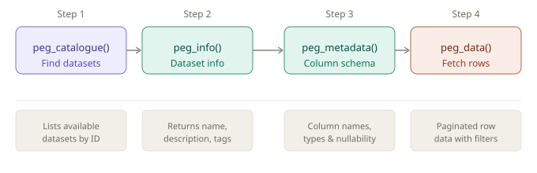

wpgdata provides a tidy R interface to the City of Winnipeg Open Data Portal. Discover available datasets, inspect their schemas, and download records with automatic parallel pagination — all via the Socrata OData V4 and Discovery APIs.
Installation
Install from CRAN:
install.packages("wpgdata")Or install the development version from GitHub:
# install.packages("pak")
pak::pak("myominnoo/wpgdata")Workflow
The package exposes four functions that follow a natural progression from discovery to download:

peg_catalogue() — discover available datasets
List every dataset published on the Winnipeg Open Data Portal. Both catalogue pages and per-dataset metadata are fetched in parallel, so the full catalogue arrives in seconds rather than minutes.
peg_catalogue()
#> # A tibble: 217 × 22
#> id name description category license_id created_at rows_updated_at
#> <chr> <chr> <chr> <chr> <chr> <date> <date>
#> 1 d4mq-wa44 Assessm… "List of a… Assessm… OGL_CANADA 2017-08-23 2026-03-20
#> 2 yg42-q284 WFPS Ca… "The data … Fire an… OGL_CANADA 2020-12-14 2026-03-20
#> 3 iibp-28fx Burial … "Locations… Cemeter… OGL_CANADA 2016-01-29 2026-03-20
#> 4 vrzk-mj7v 311 Cal… "Caller wa… Contact… OGL_CANADA 2022-06-17 2026-03-20
#> 5 gnxp-9hpt Public … "Public No… Develop… <NA> 2016-08-08 2026-03-20
#> 6 tix9-r5tc Plow Zo… "Scheduled… City Pl… <NA> 2016-10-18 2026-03-20
#> 7 8xrn-n992 Capital… "The Capit… Assessm… <NA> 2015-12-01 2026-03-20
#> 8 du7c-8488 Daily A… "The data … Insect … <NA> 2016-05-04 2026-03-20
#> 9 pfbi-rm6v FIPPA R… "The Freed… Organiz… OGL_CANADA 2019-09-10 2026-03-20
#> 10 tgrf-v2zc River W… "Record of… Water a… OGL_CANADA 2018-03-15 2026-03-20
#> # ℹ 207 more rows
#> # ℹ 15 more variables: view_last_modified <date>, publication_date <date>,
#> # index_updated_at <date>, row_count <int>, col_count <int>,
#> # download_count <int>, view_count <int>, group <chr>, department <chr>,
#> # update_frequency <chr>, quality_rank <chr>, license <chr>,
#> # license_link <chr>, tags <list>, url <chr>Use dplyr to explore the catalogue:
library(dplyr)
# count datasets by category
peg_catalogue() |>
count(category, sort = TRUE)
#> # A tibble: 26 × 2
#> category n
#> <chr> <int>
#> 1 Census 35
#> 2 City Planning 27
#> 3 Development Approvals, Building Permits, & Inspections 24
#> 4 Transportation Planning & Traffic Management 18
#> 5 Uncategorized 16
#> 6 Council Services 15
#> 7 Recreation 9
#> 8 Organizational Support Services 8
#> 9 Assessment, Taxation, & Corporate 7
#> 10 Contact Centre - 311 7
#> # ℹ 16 more rows
# find a dataset by name
peg_catalogue() |>
filter(grepl("assessment", name, ignore.case = TRUE)) |>
select(name, id, rows_updated_at)
#> # A tibble: 1 × 3
#> name id rows_updated_at
#> <chr> <chr> <date>
#> 1 Assessment Parcels d4mq-wa44 2026-03-20Use limit to cap the number of datasets returned when exploring:
peg_catalogue(limit = 10)
#> # A tibble: 10 × 22
#> id name description category license_id created_at rows_updated_at
#> <chr> <chr> <chr> <chr> <chr> <date> <date>
#> 1 d4mq-wa44 Assessm… "List of a… Assessm… OGL_CANADA 2017-08-23 2026-03-20
#> 2 yg42-q284 WFPS Ca… "The data … Fire an… OGL_CANADA 2020-12-14 2026-03-20
#> 3 iibp-28fx Burial … "Locations… Cemeter… OGL_CANADA 2016-01-29 2026-03-20
#> 4 vrzk-mj7v 311 Cal… "Caller wa… Contact… OGL_CANADA 2022-06-17 2026-03-20
#> 5 gnxp-9hpt Public … "Public No… Develop… <NA> 2016-08-08 2026-03-20
#> 6 6rcy-9uik Recycli… "Collectio… Water a… OGL_CANADA 2017-09-08 2026-03-16
#> 7 hfwk-jp4h Tree In… "Detailed … Parks OGL_CANADA 2017-08-22 2026-03-16
#> 8 p5sy-gt7y Aggrega… "Aggregate… Develop… <NA> 2016-12-21 2026-03-16
#> 9 it4w-cpf4 Detaile… "City of W… Develop… <NA> 2016-04-18 2026-03-01
#> 10 4her-3th5 311 Ser… "This data… Contact… <NA> 2015-07-22 2025-04-15
#> # ℹ 15 more variables: view_last_modified <date>, publication_date <date>,
#> # index_updated_at <date>, row_count <int>, col_count <int>,
#> # download_count <int>, view_count <int>, group <chr>, department <chr>,
#> # update_frequency <chr>, quality_rank <chr>, license <chr>,
#> # license_link <chr>, tags <list>, url <chr>
peg_info() — dataset-level information
Get high-level metadata for a single dataset before downloading it:
peg_info("d4mq-wa44")
#> # A tibble: 1 × 11
#> name description category created_at rows_updated_at view_last_modified
#> <chr> <chr> <chr> <date> <date> <date>
#> 1 Assessment… List of al… Assessm… 2017-08-23 2026-03-20 2026-03-20
#> # ℹ 5 more variables: view_count <int>, download_count <int>, tags <list>,
#> # license <chr>, provenance <chr>
peg_metadata() — column schema
Inspect column names and types. Use the field_name column in peg_data() when filtering or selecting specific columns:
peg_metadata("d4mq-wa44")
#> # A tibble: 71 × 4
#> name field_name type description
#> <chr> <chr> <chr> <chr>
#> 1 Roll Number roll_number text <NA>
#> 2 Street Number street_number number <NA>
#> 3 Unit Number unit_number text <NA>
#> 4 Street Suffix street_suffix text <NA>
#> 5 Street Direction street_direction text <NA>
#> 6 Street Name street_name text <NA>
#> 7 Street Type street_type text <NA>
#> 8 Full Address full_address text <NA>
#> 9 Neighbourhood Area neighbourhood_area text <NA>
#> 10 Market Region market_region text <NA>
#> # ℹ 61 more rows
peg_data() — fetch rows
Download rows from a dataset. All pages are fetched in parallel automatically — no manual pagination needed.
Fetch all rows:
peg_data("d4mq-wa44")
#> # A tibble: 245,137 × 72
#> `__id` roll_number street_number unit_number street_suffix street_direction
#> <chr> <chr> <int> <chr> <chr> <chr>
#> 1 row-fhe… 01000001000 1636 <NA> <NA> <NA>
#> 2 row-b7y… 01000005500 1584 <NA> <NA> <NA>
#> 3 row-8en… 01000008000 1574 <NA> <NA> <NA>
#> 4 row-8e6… 01000008200 1550 <NA> <NA> <NA>
#> 5 row-8j4… 01000008400 1538 <NA> <NA> <NA>
#> 6 row-an3… 01000008500 1536 <NA> <NA> <NA>
#> 7 row-5zx… 01000013200 1520 <NA> <NA> <NA>
#> 8 row-uqt… 01000013300 1510 <NA> <NA> <NA>
#> 9 row-3kg… 01000013600 1500 <NA> <NA> <NA>
#> 10 row-vj8… 01000013700 1490 <NA> <NA> <NA>
#> # ℹ 245,127 more rows
#> # ℹ 66 more variables: street_name <chr>, street_type <chr>,
#> # full_address <chr>, neighbourhood_area <chr>, market_region <chr>,
#> # total_living_area <int>, building_type <chr>, basement <chr>,
#> # basement_finish <chr>, year_built <int>, rooms <int>,
#> # air_conditioning <chr>, fire_place <chr>, attached_garage <chr>,
#> # detached_garage <chr>, pool <chr>, number_floors_condo <int>, …Limit rows with top:
peg_data("d4mq-wa44", top = 5)
#> # A tibble: 5 × 72
#> `__id` roll_number street_number unit_number street_suffix street_direction
#> <chr> <chr> <int> <chr> <lgl> <lgl>
#> 1 row-fhe3… 01000001000 1636 <NA> NA NA
#> 2 row-b7ye… 01000005500 1584 <NA> NA NA
#> 3 row-8en9… 01000008000 1574 <NA> NA NA
#> 4 row-8e6t… 01000008200 1550 <NA> NA NA
#> 5 row-8j4b… 01000008400 1538 <NA> NA NA
#> # ℹ 66 more variables: street_name <chr>, street_type <chr>,
#> # full_address <chr>, neighbourhood_area <chr>, market_region <chr>,
#> # total_living_area <int>, building_type <chr>, basement <chr>,
#> # basement_finish <chr>, year_built <int>, rooms <int>,
#> # air_conditioning <chr>, fire_place <chr>, attached_garage <chr>,
#> # detached_garage <chr>, pool <chr>, number_floors_condo <int>,
#> # property_use_code <chr>, assessed_land_area <int>, …Filter with R expressions:
peg_data("d4mq-wa44",
filter = total_assessed_value > 1000000,
top = 5
)
#> # A tibble: 5 × 72
#> `__id` roll_number street_number unit_number street_suffix street_direction
#> <chr> <chr> <int> <chr> <chr> <chr>
#> 1 row-b7ye… 01000005500 1584 <NA> <NA> <NA>
#> 2 row-5zx2… 01000013200 1520 <NA> <NA> <NA>
#> 3 row-knr5… 01000014500 1450 <NA> <NA> <NA>
#> 4 row-vppr… 01000045500 1290 <NA> <NA> <NA>
#> 5 row-8j8g… 01000064000 1820 <NA> <NA> <NA>
#> # ℹ 66 more variables: street_name <chr>, street_type <chr>,
#> # full_address <chr>, neighbourhood_area <chr>, market_region <chr>,
#> # total_living_area <int>, building_type <chr>, basement <chr>,
#> # basement_finish <chr>, year_built <int>, rooms <int>,
#> # air_conditioning <chr>, fire_place <chr>, attached_garage <chr>,
#> # detached_garage <chr>, pool <chr>, number_floors_condo <lgl>,
#> # property_use_code <chr>, assessed_land_area <int>, …Select specific columns:
peg_data("d4mq-wa44",
select = c("roll_number", "full_address", "total_assessed_value"),
top = 5
)
#> # A tibble: 5 × 3
#> roll_number full_address total_assessed_value
#> <chr> <chr> <int>
#> 1 01000001000 1636 MCCREARY ROAD 723000
#> 2 01000005500 1584 MCCREARY ROAD 1619000
#> 3 01000008000 1574 MCCREARY ROAD 570000
#> 4 01000008200 1550 MCCREARY ROAD 743000
#> 5 01000008400 1538 MCCREARY ROAD 577000Sort results:
peg_data("d4mq-wa44",
select = c("roll_number", "full_address", "total_assessed_value"),
orderby = "total_assessed_value desc",
top = 5
)
#> # A tibble: 5 × 3
#> roll_number full_address total_assessed_value
#> <chr> <chr> <int>
#> 1 13099071230 1485 PORTAGE AVENUE 651316000
#> 2 03091643600 92 DYSART ROAD 475244000
#> 3 08020955700 1225 ST MARY'S ROAD 328848000
#> 4 13096152000 700 WILLIAM AVENUE 262782000
#> 5 12092819100 10 KENNEDY STREET 262044000Combine filter, select, and orderby:
peg_data("d4mq-wa44",
filter = total_assessed_value > 1000000,
select = c("roll_number", "full_address", "total_assessed_value"),
orderby = "total_assessed_value desc",
top = 5
)
#> # A tibble: 5 × 3
#> roll_number full_address total_assessed_value
#> <chr> <chr> <int>
#> 1 13099071230 1485 PORTAGE AVENUE 651316000
#> 2 03091643600 92 DYSART ROAD 475244000
#> 3 08020955700 1225 ST MARY'S ROAD 328848000
#> 4 13096152000 700 WILLIAM AVENUE 262782000
#> 5 12092819100 10 KENNEDY STREET 262044000Skip rows (useful for resuming or sampling):
peg_data("d4mq-wa44", skip = 1000, top = 5)
#> # A tibble: 5 × 72
#> `__id` roll_number street_number unit_number street_suffix street_direction
#> <chr> <chr> <int> <chr> <lgl> <lgl>
#> 1 row-s6k6… 01000985500 230 <NA> NA NA
#> 2 row-pgxs… 01000986000 224 <NA> NA NA
#> 3 row-4wsc… 01000986500 220 <NA> NA NA
#> 4 row-ka5d… 01000986800 216 <NA> NA NA
#> 5 row-q3va… 01000987500 3380 <NA> NA NA
#> # ℹ 66 more variables: street_name <chr>, street_type <chr>,
#> # full_address <chr>, neighbourhood_area <chr>, market_region <chr>,
#> # total_living_area <int>, building_type <chr>, basement <chr>,
#> # basement_finish <chr>, year_built <int>, rooms <int>,
#> # air_conditioning <chr>, fire_place <chr>, attached_garage <chr>,
#> # detached_garage <chr>, pool <chr>, number_floors_condo <int>,
#> # property_use_code <chr>, assessed_land_area <int>, …Finding dataset IDs
The easiest way is directly in R:
peg_catalogue() |>
filter(grepl("your search term", name, ignore.case = TRUE)) |>
select(name, id, category)Alternatively, browse the City of Winnipeg Open Data Portal and copy the ID from the dataset URL:
OData filter reference
peg_data() accepts plain R expressions in the filter argument and translates them to OData automatically. Raw OData strings are also accepted for advanced use.
| R expression | OData equivalent | Meaning |
|---|---|---|
x == 1 |
x eq 1 |
equal |
x != 1 |
x ne 1 |
not equal |
x > 1 |
x gt 1 |
greater than |
x >= 1 |
x ge 1 |
greater than or equal |
x < 1 |
x lt 1 |
less than |
x <= 1 |
x le 1 |
less than or equal |
x == 1 & y == 2 |
(x eq 1 and y eq 2) |
AND |
x == 1 \| y == 2 |
(x eq 1 or y eq 2) |
OR |
!x |
not x |
NOT |
License
MIT © Myo Minn Oo